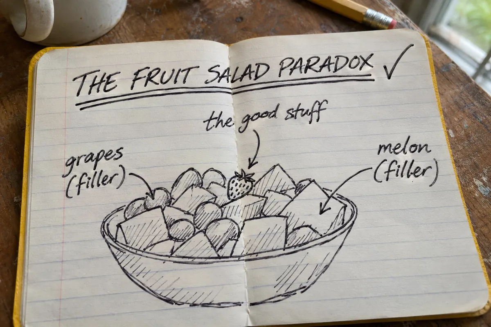

The Fruit Salad Paradox

not his real notebookIsaac’s name for the mixed bag that is mostly stuff nobody wants. Swipe through the cards. Each one saves as a picture.
Shake the bag
A fresh mixed bag. Variety! Shake it and see what you get.
MIXED BAGassorted favourites*
*some
Where this came from: the 5 Nov 2026 episode, from about 0:19:43. Andrew complains about mixed bags of candy, Isaac names the paradox at 0:22:48, and Tim (0:32:49) suggests Build-a-Bear for candy. Quotes are from a machine transcript, checked word for word against it.